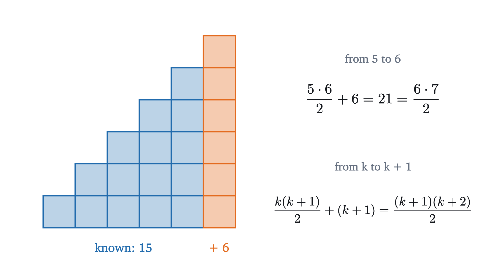
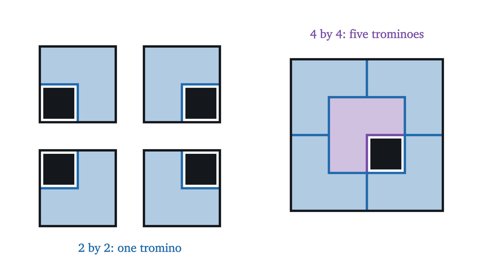
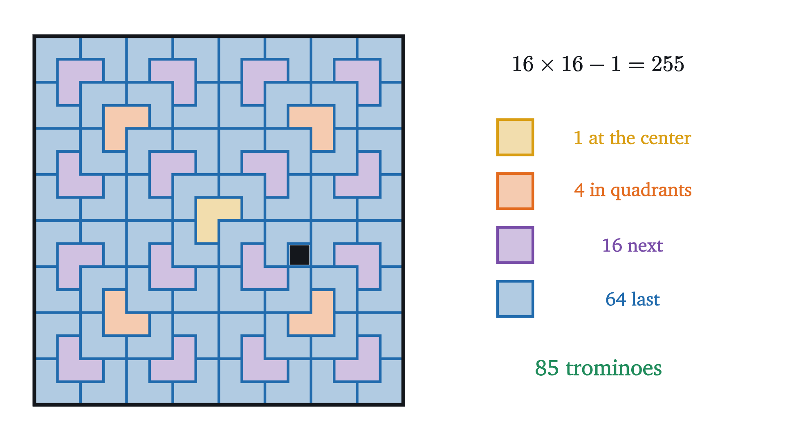
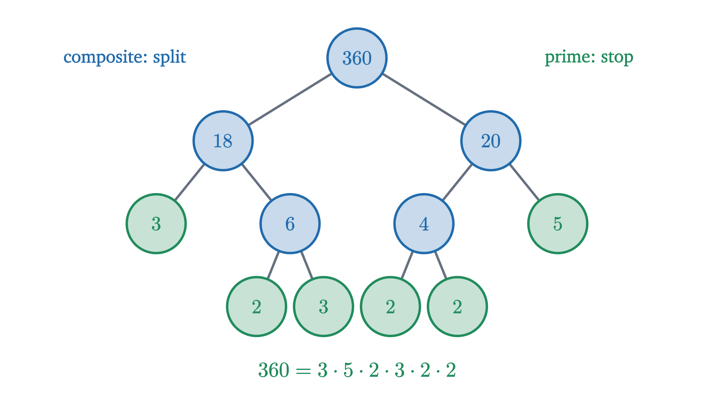

Mathematical induction: infinitely many dominoes
How a finite argument proves infinitely many statements. Induction stated exactly, used on a sum and a tiling, and a famous false proof taken apart.
Compute $n^2 + n + 41$ for $n = 0, 1, 2, 3$ and you get 41, 43, 47, 53, all prime. Keep going. It is prime for $n = 10$, for $n = 20$, for $n = 39$: forty cases in a row without an exception. And then $n = 40$ gives $1681 = 41^2$.
Forty confirmations settled nothing, and neither would forty million, because a statement about all positive integers makes infinitely many claims and checking handles them one at a time. To prove such a statement we need an argument of finite length that covers every case at once. Mathematical induction is the standard one. The dominoes above are the usual picture of it. Our job is to turn that picture into a precise tool and to learn how it can be misused.
A formula to prove
We need a running example. What is $1 + 2 + 3 + \dots + n$? For $n = 1, 2, 3, 4$ the sums are 1, 3, 6, 10. There is a well-known trick for the general case.
With $n$ columns the rectangle is $n$ wide and $n + 1$ tall, which suggests $1 + 2 + \dots + n = \frac{n(n+1)}{2}$. The story goes that Gauss found this as a schoolboy. The doubling argument is in fact a complete proof, but it depended on spotting a trick, and most formulas do not come with one. Here is a second way to see the same formula. It uses no trick and it works on a great many other problems.
Suppose we already know the formula for some particular $n$, say $n = 5$: the staircase with 5 columns has $\frac{5 \cdot 6}{2} = 15$ squares. What about 6? We do not start again. The staircase for 6 is the staircase for 5 with one more column of 6 squares.

Check the last line of the figure: $\frac{k(k+1)}{2} + (k+1) = (k+1)\left(\frac{k}{2} + 1\right) = \frac{(k+1)(k+2)}{2}$, and that is the formula with $n$ replaced by $k + 1$. So whenever the formula is right for one number, it is right for the next. It is right for $n = 1$, since $1 = \frac{1 \cdot 2}{2}$. Hence it is right for 2, hence for 3, and there is no number at which this could stop.
The principle of induction
That argument had two parts, and the dominoes have the same two parts. One domino is pushed. And the row is set up so that any domino that falls knocks over the one after it. Neither part alone brings the row down. Let $P(n)$ stand for a statement about the integer $n$, such as “$1 + 2 + \dots + n = \frac{n(n+1)}{2}$”.
In the step, the assumption that $P(k)$ is true is called the induction hypothesis. The step does not claim that $P(k)$ is true. It proves an implication, “if $P(k)$ then $P(k+1)$”, for each $k$ separately, and that is why it is legitimate to assume $P(k)$ while doing it.
What is the status of this theorem? “And so on” is persuasive, but it is the very thing we are trying to make exact. The principle rests on a basic property of the positive integers: every non-empty set of positive integers has a least element. This is called the well-ordering principle. In the usual axioms for the integers either it or induction is taken as an axiom, and, with the ordinary rules of arithmetic in hand, each can be derived from the other. Here is the derivation in the direction we need.
Nothing is special about starting at 1. If the base case is $P(n_0)$ and the step holds for every $k \ge n_0$, the conclusion is $P(n)$ for every $n \ge n_0$. Here is our running example written as a formal proof, in the layout to imitate.
Pause and try
The sums of the first odd numbers are $1$, $1 + 3 = 4$, $1 + 3 + 5 = 9$. Guess a formula for $1 + 3 + 5 + \dots + (2n - 1)$ and prove it by induction.
Show answerHide answer
The guess is $n^2$. Base case: $1 = 1^2$. Step: assume $1 + 3 + \dots + (2k-1) = k^2$. The next odd number is $2(k+1) - 1 = 2k + 1$, so $1 + 3 + \dots + (2k - 1) + (2k+1) = k^2 + 2k + 1 = (k+1)^2$. That is the statement for $k + 1$.
Induction without a formula: tiling with trominoes
Induction is not a method for sums only. In the next problem there is no algebra at all. An L-tromino is a tile made of three unit squares in the shape of an L, that is, a $2 \times 2$ square with one square missing. Take a chessboard, $8 \times 8$, and remove one square, any one. Can the remaining 63 squares be covered exactly by 21 L-trominoes, without overlaps and without any tile sticking out?
The count $63 = 3 \times 21$ allows it, but a count only shows that the obstruction, if there is one, is not arithmetic. Start with small boards.

Pause and try
Draw a $4 \times 4$ board, remove a square of your choice (not the one in the figure), and tile the rest with five trominoes. Then look at what you did: is there a first tile that makes the rest easy?
Show answerHide answer
One reliable method: cut the board into four $2 \times 2$ quadrants. The removed square lies in one of them. Place a tromino around the center of the board so that it covers one square in each of the other three quadrants. Now every quadrant is a $2 \times 2$ board with exactly one square unavailable, so each of them is completed by a single tromino.
The same first move works on the $8 \times 8$ board, and it reduces the problem to four $4 \times 4$ boards, which we have just learned to do.
Going from 4 to 8 used nothing about the number 4 except that we could already tile such a board wherever its missing square was. That is an induction step.
Notice what the hypothesis had to be. In three of the quadrants the unavailable square is in a corner, and in $Q$ it could be anywhere. The proof works because $P(k)$ speaks of every position. Had we tried to prove only the weaker statement “the board with one of its four central squares removed can be tiled”, the step would have failed. It needs a corner square left out of each quadrant, and a hypothesis about central squares does not provide that once the quadrants are $4 \times 4$ or larger. This happens often: a stronger statement can be easier to prove by induction, because the hypothesis you get to assume is stronger too.

A false proof: all horses are the same color
The following argument has been puzzling students for decades. It claims to prove: in any set of $n$ horses, all the horses have the same color.
Base case. In a set of one horse, all horses have the same color. Induction step. Assume the claim for sets of $k$ horses, and take a set of $k + 1$ horses. Leave out the last horse: the remaining $k$ have the same color, by the hypothesis. Leave out the first horse instead: the remaining $k$ have the same color too. The two groups overlap, so all $k + 1$ horses have the same color.
The conclusion is false, so some sentence is wrong. The base case is true. That leaves the step.
Pause and try
The step claims to work for every $k \ge 1$. Test it for a specific large value, $k + 1 = 5$, and then for the smallest value, $k + 1 = 2$. For which $k$ is the sentence “the two groups overlap” true?
Show answerHide answer
With five horses, the groups are horses 1 to 4 and horses 2 to 5, which share horses 2, 3 and 4, and the argument is sound. With two horses, the groups are horse 1 alone and horse 2 alone. They share no horse, so nothing forces the two colors to agree. The overlap consists of horses 2 to $k$, which is $k - 1$ horses, and it is empty when $k = 1$.
So the step is valid for every $k \ge 2$ and invalid for exactly one value, $k = 1$. That is enough to destroy the proof. In the row of boxes, the arrow from $P(1)$ to $P(2)$ is missing, and $P(1)$, although true, passes nothing on. Every later arrow is in place, and they are perfectly correct: if every two horses had the same color, then indeed every set of horses would be of one color. But $P(2)$ is false, and so are all the statements after it.
The moral for writing proofs is specific. The step must be valid for every $k$ from the base case onward, and the small values of $k$ are where an argument that pictures “a typical large case” is most likely to fail. After writing an induction step, run it by hand for the first value of $k$.
Strong induction
Sometimes the case $k + 1$ does not lean on the case $k$ but on some earlier case, and we cannot say in advance which. Take the claim that every integer $n \ge 2$ is a product of primes (a prime alone counts as a product with one factor). If $n$ is not prime, then $n = ab$ with $a$ and $b$ smaller than $n$, but neither is $n - 1$ in general. We would like to assume the claim for all smaller numbers.
So strong induction is ordinary induction applied to a cleverer statement, and it needs no new axiom. As before, the starting point can be any integer $n_0$ in place of 1.

Worked examples
Common mistakes
Stepping back
The problem was to prove infinitely many statements with a finite argument. Induction does it by proving one statement and one implication with a variable in it, and the well-ordering of the positive integers guarantees that nothing escapes. Finding a proof by induction always comes down to seeing how the case $k + 1$ is built from earlier cases: a staircase with one more column, a board made of four smaller boards, a composite number made of two smaller factors.
Induction proves a formula once it has been guessed. It does not produce the guess, and it often says little about why the formula has the shape it has. The staircase doubled into a rectangle explains $\frac{n(n+1)}{2}$ in a way the induction proof does not. The two kinds of argument complement each other, and you may already have met both: the proof that every row of Pascal’s triangle consists of binomial coefficients is an induction on the rows.
Check yourself
An argument proves the induction step “if $P(k)$ then $P(k+1)$” correctly for every $k \ge 1$, but no base case is checked. What can be concluded?
Problems
Problems 1 to 3 follow the template. Problems 4 to 6 need a choice of base case, a diagnosis or a second idea. Problems 7 and 8 use strong induction and a geometric step.
Problem 1
Prove that $1 + 2 + 4 + \dots + 2^{n-1} = 2^n - 1$ for every integer $n \ge 1$.
Show solutionHide solution
Base case. For $n = 1$ the left side is $1$ and the right side is $2^1 - 1 = 1$. Step. Assume $1 + 2 + \dots + 2^{k-1} = 2^k - 1$. Adding the next term, $2^k$, gives $2^k - 1 + 2^k = 2 \cdot 2^k - 1 = 2^{k+1} - 1$, which is the statement for $k + 1$.
Problem 2
Prove that $1^2 + 2^2 + \dots + n^2 = \dfrac{n(n+1)(2n+1)}{6}$ for every integer $n \ge 1$.
Show solutionHide solution
Base case. $1 = \frac{1 \cdot 2 \cdot 3}{6}$. Step. Assume the formula for $k$. Then
Since $2k^2 + 7k + 6 = (k+2)(2k+3)$, this equals $\frac{(k+1)(k+2)(2(k+1)+1)}{6}$, the formula for $k + 1$. Check with $n = 3$: $1 + 4 + 9 = 14 = \frac{3 \cdot 4 \cdot 7}{6}$.
Problem 3
Prove that $7^n - 1$ is divisible by 6 for every integer $n \ge 1$.
Show solutionHide solution
Base case. $7 - 1 = 6$. Step. Assume $7^k - 1 = 6m$ for an integer $m$. Then $7^{k+1} - 1 = 7 \cdot 7^k - 1 = 7(7^k - 1) + 6 = 7 \cdot 6m + 6 = 6(7m + 1)$, which is divisible by 6.
Problem 4
For which positive integers $n$ is $n! > 2^n$? Prove your answer.
Show solutionHide solution
The values of $n!$ are $1, 2, 6, 24, 120$ and of $2^n$ are $2, 4, 8, 16, 32$, so the inequality fails for $n = 1, 2, 3$ and holds for $n = 4$ and $5$. Claim: it holds for all $n \ge 4$. Base case. $4! = 24 > 16 = 2^4$. Step. Let $k \ge 4$ and assume $k! > 2^k$. Then $(k+1)! = (k+1) \cdot k! > (k+1) \cdot 2^k > 2 \cdot 2^k = 2^{k+1}$, where the last inequality uses $k + 1 > 2$.
Problem 5
Here is a “proof” that $a^n = 1$ for every real number $a \ne 0$ and every integer $n \ge 0$. Base case: $a^0 = 1$. Step (strong induction): assume $a^j = 1$ for all $0 \le j \le k$. Then $a^{k+1} = \dfrac{a^k \cdot a^k}{a^{k-1}} = \dfrac{1 \cdot 1}{1} = 1$. Find the error.
Show solutionHide solution
The algebra $a^{k+1} = a^k \cdot a^k / a^{k-1}$ is correct. The error is in replacing $a^{k-1}$ by 1. The hypothesis covers exponents $j$ with $0 \le j \le k$, and $k - 1$ is in that range only when $k \ge 1$. For $k = 0$ the step uses $a^{-1} = 1$, which is not part of the hypothesis and is false unless $a = 1$. So the step from $n = 0$ to $n = 1$ is invalid, and that is exactly the false statement $a^1 = 1$. As with the horses, every later step is valid and the first one is broken. The proof could be repaired only by adding $n = 1$ as a second base case, and that base case is false.
Problem 6
Prove that $4^n - 1$ is divisible by 3 for every $n \ge 1$ in two ways: by induction, and as a consequence of the tromino theorem.
Show solutionHide solution
Induction. For $n = 1$, $4 - 1 = 3$. If $4^k - 1 = 3m$, then $4^{k+1} - 1 = 4(4^k - 1) + 3 = 3(4m + 1)$. From the tiling. A $2^n \times 2^n$ board has $2^n \cdot 2^n = 4^n$ squares, so with one square removed it has $4^n - 1$. By the theorem those squares can be covered exactly by trominoes, each covering 3 squares, without overlap. So $4^n - 1$ is 3 times the number of trominoes. For the $16 \times 16$ board this is $255 = 3 \cdot 85$.
Problem 7
A chocolate bar is a rectangle made of $m \ge 1$ small squares. A break splits one piece into two along a line between squares. Prove that reducing the bar to $m$ single squares takes exactly $m - 1$ breaks, in whatever order the breaks are made.
Show solutionHide solution
Strong induction on $m$. Let $P(m)$ say: every way of reducing any piece of $m$ squares to single squares uses exactly $m - 1$ breaks. Base case. A piece of 1 square needs $0 = 1 - 1$ breaks. Step. Let $k \ge 1$, assume $P(1), \dots, P(k)$, and take a piece of $k + 1$ squares. Since $k + 1 \ge 2$ a break is needed, and the first break produces pieces of $a$ and $b$ squares with $a + b = k + 1$ and $1 \le a, b \le k$. Every later break acts on a part of one of these two pieces, so the remaining breaks reduce each of them separately. By the hypothesis that takes exactly $a - 1$ and $b - 1$ breaks. The total is $1 + (a - 1) + (b - 1) = a + b - 1 = (k+1) - 1$. Ordinary induction would not do here, because $a$ and $b$ are not $k$ in general. (A quicker argument: each break raises the number of pieces by one, from 1 at the start to $m$ at the end.)
Problem 8
Draw $n \ge 1$ straight lines in the plane so that no two are parallel and no three pass through one point. Prove that they divide the plane into $\dfrac{n^2 + n + 2}{2}$ regions.
Show solutionHide solution
Base case. One line divides the plane into 2 regions, and $\frac{1 + 1 + 2}{2} = 2$. Step. Assume that any $k$ such lines make $\frac{k^2 + k + 2}{2}$ regions, and take $k + 1$ lines satisfying the conditions. Set one of them, $\ell$, aside. The other $k$ lines still satisfy the conditions, so the hypothesis applies to them. The line $\ell$ meets each of the $k$ others, since none is parallel to it, and it meets them in $k$ different points, since no three lines pass through one point. These $k$ points cut $\ell$ into $k + 1$ pieces. Each piece lies inside one of the old regions and splits it into two, and different pieces lie in different old regions. So putting $\ell$ back adds exactly $k + 1$ regions:
That is the formula for $k + 1$. Check: 2 lines give 4 regions and 3 lines give 7, and the formula gives $\frac{4 + 2 + 2}{2} = 4$ and $\frac{9 + 3 + 2}{2} = 7$.